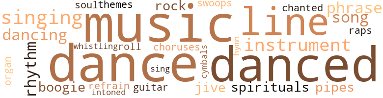

Reluctant Rapist (The), by Bullins, Ed (1973)
92 music-related terms matched in this text.
Most frequent terms in this topic: music (14); dance (13); danced (12); singing (5); line (5)
boogie.n.01
Definition: an instrumental version of the blues (especially for piano)
| word | sentence |
|---|---|
| boogie | The windows in the other apartments in the unit were as black and vacant as the alley we passed through to the street , but across the court some were lighted , and a toilet flushed and for a moment a record machine started to tumble old brash boogie out into the dark , until somebody jerked the needle off , scratching the record to shriek . |
| boogie | By her back-of-the-hand nose-wipe and frowning at the boogie that tickled the back of her nose . |
chorus.n.01
Definition: any utterance produced simultaneously by a group
| word | sentence |
|---|---|
| choruses | He began telling me about silk screen prints and from there he went to the finer points of " down home " blues while the radio chanted Gregorian choruses . |
cymbal.n.01
Definition: a percussion instrument consisting of a concave brass disk; makes a loud crashing sound when hit with a drumstick or when two are struck together
| word | sentence |
|---|---|
| cymbals | He danced , he danced so beautifully , he knew , like to music , like to the sound of drums and clashing cymbals . |
dance.n.01
Definition: an artistic form of nonverbal communication
| word | sentence |
|---|---|
| dance | The African interpreted the dance as a form of his tribal music , but Lou was n't happy with the results . |
| dances | They would all go to neighborhood bars , dances and cabarets , and he would flirt with the foxes encountered and sometimes take along one of the girls that worked in the laundry with Dinah , and he and Harry would have long rambling arguments about boxing before the bars closed and Harry had to get home and catch a nod so that he could get up and reach his job at dawn in a bakery . |
| dance | They parted after one dance and found separate partners . |
| dance | The boy did a private dance of his own making and pulled a pocket knife from his sleeve with a flourish , opened the shining blade with a snap of the button , and whirled and tossed the blade as he danced . |
| dance | The mood was intensifying for the afternoon 's pagan dance . |
| dance | The fall sky was as gray as a morgue slab , and a pagan dance was held that day , a dance that marked the end and the beginning of something for Stevie Benson . |
| dance | The fall sky was as gray as a morgue slab , and a pagan dance was held that day , a dance that marked the end and the beginning of something for Stevie Benson . |
| dance | They came for the dance , so now for the floor show . |
dance.v.02
Definition: move in a pattern; usually to musical accompaniment; do or perform a dance
| word | sentence |
|---|---|
| dancing | Len was dancing with a small girl . |
dance.v.03
Definition: skip, leap, or move up and down or sideways
| word | sentence |
|---|---|
| dance | I asked Mona to dance but she said she 'd rather watch and talk and drink . |
| danced | Len still danced , picking up his tempo when voices began screaming for him to turn the radio off . |
| danced | The record was changed ; Len still danced with the same girl ; they put on a show , with the other dancers opening a small space for their churning bodies . |
| dance | I wanted to go over and dance with her but I did n't . |
| dance | Rick and Lou had moved to the back room to dance . |
| danced | Rick danced with almost every girl ; it seemed that he had to have each girl on the floor with him that night . |
| danced | Len danced seriously with a few , never with Lou , improvising steps , and all the while smiling at his partners . |
| dancing | The spectators crowded the walls watching the couples under the scarlet glare of the lights , and Afro-Cuban records played long drum solos with the pairs dancing wildly as the tempo rose . |
| danced | The boy did a private dance of his own making and pulled a pocket knife from his sleeve with a flourish , opened the shining blade with a snap of the button , and whirled and tossed the blade as he danced . |
| dance | " Will you dance with me ? " |
| danced | Lou danced as she looked : coarse and brisk with unexpected moments of grace and charm . |
| dance | " When I would n't dance with him and told him he acted like a fool he told me I had to drink his beer or wear it , and then he threw it on me when I would n't drink , " she said while crying . |
| danced | " After Hours , " a sort of slow-grind nasty-nasty record , was played most of the night , and they all danced with the lights way down low , those danced who could , and once even with the lights out , until Marigold began bellowing about how they should be turned on , though nobody had tried to dance with Marigold for half an hour . |
| danced | " After Hours , " a sort of slow-grind nasty-nasty record , was played most of the night , and they all danced with the lights way down low , those danced who could , and once even with the lights out , until Marigold began bellowing about how they should be turned on , though nobody had tried to dance with Marigold for half an hour . |
| dance | " After Hours , " a sort of slow-grind nasty-nasty record , was played most of the night , and they all danced with the lights way down low , those danced who could , and once even with the lights out , until Marigold began bellowing about how they should be turned on , though nobody had tried to dance with Marigold for half an hour . |
| danced | He then danced back , waiting for his dream adversary 's vicious counterattack , but stopped him cold with a low right hand thrown belt high as he charged in flailing , and Stevie finally creamed the shadow to the sidewalk with a left bolo to the kidneys . |
| dancing | The two came to the center of the circle and began dancing like lightweights . |
| danced | He danced , he danced so beautifully , he knew , like to music , like to the sound of drums and clashing cymbals . |
| danced | He danced , he danced so beautifully , he knew , like to music , like to the sound of drums and clashing cymbals . |
| danced | He danced back , letting Snoopy 's swing slip past , and then feinted with his left . |
guitar.n.01
Definition: a stringed instrument usually having six strings; played by strumming or plucking
| word | sentence |
|---|---|
| guitar | When she stepped from the treadle the doors hissed shut and the car lurched forward to the strumming of a funky guitar . |
hymn.n.01
Definition: a song of praise (to God or to a saint or to a nation)
| word | sentence |
|---|---|
| hymn | Marie Ann was humming a hymn when Dandy passed the back of the outhouse with the heavy buckets . |
music.n.01
Definition: an artistic form of auditory communication incorporating instrumental or vocal tones in a structured and continuous manner
| word | sentence |
|---|---|
| music | She dropped her quarter into the fare box and sniffed at the driver 's choice of music as she headed toward the rear . |
| music | " Do n't you find religious music restful ? " he asked . |
| music | Nor was a black music soul station on . |
| music | The African interpreted the dance as a form of his tribal music , but Lou was n't happy with the results . |
| music | This was n't too startling , for the same had been explained to me many times before in classes and by books but now I had discovered it for myself , and it all seemed weird , then , with the drum music and beer and wine , and all the players standing there , drinking and dancing in their masks , their disguises contrived in split seconds for the moment . |
| music | The group was quiet , attentive to Rick ; the music had been stopped in the back and everyone was in the living room listening to his many words about man and woman and the conduct of each to each , especially and entirely if they were black . |
| music | I could n't , I knew , and I did n't understand most of that foreign music , for one , and if I did , I convinced myself then , I probably still would n't like it . |
| music | " This very fine music will be off in an hour and then we can all listen to the African program , " Len said . |
| music | " Yes , it will be on soon as this music goes off . " |
| music | We put seventy-five cents ' worth of gas in it , picked up a bottle of port and drove up above the Sunset Strip , drinking all the way and listening to soul music on the tinny AM radio . |
| music | He danced , he danced so beautifully , he knew , like to music , like to the sound of drums and clashing cymbals . |
| music | The radio played country music . |
| music | And night was outside , enclosing the blackened car as the pitter-patter of the returning dogs ' feet came from the road , and the cricket music and an occasional pig 's oink and a drowsy duck quacking at the dark , while the white summer moon swung up into the black , star-pierced southern heavens , and the stars that no city lights dimmed winked as if they too had secrets . |
| music | And the music played . |
musical_instrument.n.01
Definition: any of various devices or contrivances that can be used to produce musical tones or sounds
| word | sentence |
|---|---|
| instruments | But my mother took me to the church and community center cultural events and programs , and there I saw black people singing and playing instruments and reading poetry that put me to sleep . |
| instrument | I wondered who he was and what instrument he blew . |
| instruments | And there were classical records and ones from India on which the musicians played weird instruments with more strings than I could count and there were many African records with pictures on their jackets of tribesmen in native dress beating drums or clicking sticks together . |
| instrument | There was loud breathing and moans and sighs up topside on the bed where Cherry had somehow mounted Ernie after getting or having his dick hard enough for her to ride it viciously , like a witch must stay astride her broom , as I learned when I crawled away from under the punishment of the torture rack of that mattress and spring beating me to a crushed hamburger ; for I looked back and saw Cherry in the dim light , white as a devil , upon my roommate , Ernest , fucking him unconscious , for he had not awakened from his stupor , only was being ravished - completely - his instrument of pleasure , his black naked self , his very memory of that dark , sexual dawn . |
organ.n.05
Definition: wind instrument whose sound is produced by means of pipes arranged in sets supplied with air from a bellows and controlled from a large complex musical keyboard
| word | sentence |
|---|---|
| organ | A long aisle led downward to the pulpit and above the rostrum a banner spread out across organ pipes , spelling out the name of the Holiness African Baptist Chapel . |
phrase.n.02
Definition: a short musical passage
| word | sentence |
|---|---|
| phrases | Whenever a girl got near he called out to her and said several phrases before she moved away in the crowd . |
| phrase | A hint of mirth at a certain moment when a turn of dialect was made , making a common phrase an absurd pun . |
| phrases | She was n't too good , from the way the African had her repeat phrases , but she knew enough for him to answer her rapidly and say something which caused her to laugh . |
pipe.n.04
Definition: a tubular wind instrument
| word | sentence |
|---|---|
| pipes | A long aisle led downward to the pulpit and above the rostrum a banner spread out across organ pipes , spelling out the name of the Holiness African Baptist Chapel . |
| pipes | The three men kidded like that for a while , slapping their cards down on the table pulled between their beds , puffing at their pipes and Bull Durham , not bothering to notice the new man , until they began snuffing out their oil lamps , one by one . |
rap.n.05
Definition: genre of African-American music of the 1980s and 1990s in which rhyming lyrics are chanted to a musical accompaniment; several forms of rap have emerged
| word | sentence |
|---|---|
| raps | And I knew about the campaign workers who came through whatever neighborhood we lived in then , workers from all the parties , and how when the communists came my mother would n't open the door because she did piecework in a government plant , but my stepfather , who read a lot and had been in the war , would go out and talk with the sincere-looking men and women in extended conversational raps , to the distress of our neighbors , newly from the South , though my mother took secret pride in my stepfather 's daring . |
refrain.n.01
Definition: the part of a song where a soloist is joined by a group of singers
| word | sentence |
|---|---|
| refrain | Now allow me to restate my refrain . |
rhythm.n.04
Definition: the arrangement of spoken words alternating stressed and unstressed elements
| word | sentence |
|---|---|
| rhythms | The girl finally left , swinging her grass bag and showing her firm ankles as she turned the corner , but he stayed , explaining things about images and rhythms , things I did n't know about . |
| rhythm | Her breathing rhythm changed . |
| rhythms | After a while the sleep rhythms returned to their breathing and bed postures , and I crept out the door and closed it , then went downstairs and sat in the lobby reading Saturday Evening Posts and Looks until the mailman came , the sun being up by then . |
rock_'n'_roll.n.01
Definition: a genre of popular music originating in the 1950s; a blend of black rhythm-and-blues with white country-and-western
| word | sentence |
|---|---|
| rock-and-roll | When we got back to the house , rock-and-roll played on the radio and Lou was teaching Olu to twist . |
| rock | Ya gon na feel it down ta ya soul . . . yes , indeed . . . Ya gon na know it 's dat good ole rock 'n' roll . . . yes , indeed . " |
sing.v.02
Definition: produce tones with the voice
| word | sentence |
|---|---|
| singing | Ida was over the sink with elbows in suds , softly singing a gospel song , jack and Dandy crept through the kitchen , crossed the front room and climbed to their room on the second floor . |
| sing | " What makes ya think ya can sing ? " |
singing.n.01
Definition: the act of singing vocal music
| word | sentence |
|---|---|
| singing | But my mother took me to the church and community center cultural events and programs , and there I saw black people singing and playing instruments and reading poetry that put me to sleep . |
| singing | The last time had been the night of the beach party , after the sweltering day with its short heavy blasts of ocean breezes prodding time along like a coal scow and the bonfire-lit evening with the guys singing and debating above the breakers ' rushing drone to get the girls ' eyes , and on our way back into town - past the missile manufacturers and safely through lily-white Inglewood - without a traffic ticket , ten of us , six guys and four girls , had stopped at Len 's place on Figueroa for a nightcap , bleary-eyed , sand - and sun-worn . |
| singing | Through the cracked door , I heard her singing among the dishes ' clatter . |
| singing | She rubbed it in about Dandy being able to pay his board without working , for Dandy 's mother had a civil service job in the city , and the city slick Dandy was from Philly and had taken piano lessons and boxing lessons and singing and dancing lessons , and had a motorcycle ( really only a motorbike ) . |
song.n.01
Definition: a short musical composition with words
| word | sentence |
|---|---|
| song | No one over eighteen stepped from a door ; not a teacher or coach or administrator was seen seeking out his car or slinking to a bus stop that day until the dancers upon the concrete were blocks away , souls in time to the trotting and trucking of the savage song of the threshing floor . |
| song | " Just eatin ' fried chicken and fukkin ' ev ' va night , baby , " he said , saying the line of the street song with a smile . |
| song | Ida was over the sink with elbows in suds , softly singing a gospel song , jack and Dandy crept through the kitchen , crossed the front room and climbed to their room on the second floor . |
soul.n.05
Definition: a secular form of gospel that was a major Black musical genre in the 1960s and 1970s
| word | sentence |
|---|---|
| soul | Nor was a black music soul station on . |
spiritual.n.01
Definition: a kind of religious song originated by Blacks in the southern United States
| word | sentence |
|---|---|
| spirituals | Old-time negro spirituals played . |
| spirituals | Annie was shelling peas on the front step , humming one of the old-time spirituals that he had heard in the reverend 's study . |
swing.n.05
Definition: a style of jazz played by big bands popular in the 1930s; flowing rhythms but less complex than later styles of jazz
| word | sentence |
|---|---|
| jive | Do n't come with that jive ta me . " |
| jive | " Well , I do n't know ' bout ail that intellectual jive , Rick , " the large man said . |
swoop.n.01
Definition: (music) rapid sliding up or down the musical scale
| word | sentence |
|---|---|
| swoops | A violent convulsion struck Cherry on one of her mighty downward swoops and she gagged and expelled gasps of strangled breath from her constricted throat ; her sputum sprayed coughing upon my head as I tried to duck away from the frenzy of that last moment of their coupling . |
theme.n.03
Definition: (music) melodic subject of a musical composition
| word | sentence |
|---|---|
| themes | I even stopped reading harmless Frank Yerby when I found he was negro and refused until my late teens to read books with negro themes and subjects . |
tone.v.01
Definition: utter monotonously and repetitively and rhythmically
| word | sentence |
|---|---|
| chanted | He began telling me about silk screen prints and from there he went to the finer points of " down home " blues while the radio chanted Gregorian choruses . |
| intoned | and by the grace of God . . . Ahhhmen , " Uncle Clyde intoned . |
tune.n.01
Definition: a succession of notes forming a distinctive sequence
| word | sentence |
|---|---|
| line | Older girls waiting in line for cigarettes , holding Cokes and popping gum in their wide mouths . |
| lines | Or some other good reason along these lines . |
| lines | Or did I only glimpse something else lying beneath the surface words of the volumes I had read , some smudges between the clear lines , and was I and am I now completely a fool ? |
| line | They had found and followed his bloodstains ten blocks to the elevated line , where they had disappeared on the crosstown boarding platform . |
| line | I was n't afraid to speak to whites or shy in their presence like many of my friends were ; no , I went to school with whites every day and would punch one in the mouth if he was n't my friend or had gotten out of line . |
| line | Morning , noon and now midnight , a line of California jew girls beating a path to our door . |
| line | Stevie waited in his line , behind the numerous heads , not thinking of the long afternoon hours ahead , only sucking at the scraps of baloney caught between his teeth from the king-sized hoagie he had eaten at the little lunch counter on Fifth Street . |
whistle.v.01
Definition: make whistling sounds
| word | sentence |
|---|---|
| whistling | The erasers thrown at Wild Leo in the third row by the hysterical , horn-rimmed redhead who taught something she said was social functioning ; the zigging chalk whistling down the aisle at some pompadoured head in math class ; the spitball splattering upon the neck of the shell-shocked English teacher and causing him to verbally fornicate with Jesus ; the dragging of Pancho the Spic down to the principal 's office for writing obscene sugges - tions to Rita the Jew ; the accumulated deadening hate of packing fifty-one haters in a space that only thirty could possibly fit - Monday morning was like many others . |
157 violence-related terms matched in this text.
Most frequent terms in this topic: fight (17); hate (8); hurt (7); kill (7); violence (6)
abhor.v.01
Definition: find repugnant
| word | sentence |
|---|---|
| loathed | We made almost perfect roommates : we did n't like the same type girls , our friends loathed one another and would hardly have anything to do with us separately when one or the other was about , and we did almost nothing to - gether except gamble and meet each afternoon after classes at the chess tables . |
abrasion.n.01
Definition: an abraded area where the skin is torn or worn off
| word | sentence |
|---|---|
| scratch | " When I say break , punk , you better scratch ass and git back like I tell you or you 'll git yore little ass stomped today as well as whupped . " |
anger.n.01
Definition: a strong emotion; a feeling that is oriented toward some real or supposed grievance
| word | sentence |
|---|---|
| anger | In mock anger , Ted said , " At least I ken git outta bed an ' go ta tha bathroom . " |
assail.v.01
Definition: attack someone physically or emotionally
| word | sentence |
|---|---|
| assaulted | When Jess pushed in the door to his apartment a smell assaulted Chuck that he tried not to show that he noticed . |
blast.v.03
Definition: use explosives on
| word | sentence |
|---|---|
| shelling | The real estate agents and the bank had done such a good job there was n't anything in the pot left to cop ; we could only turn out our pockets and keep shelling out to forestall foreclosure . |
| shelling | Annie was shelling peas on the front step , humming one of the old-time spirituals that he had heard in the reverend 's study . |
butcher.v.01
Definition: kill (animals) usually for food consumption
| word | sentence |
|---|---|
| slaughtered | The foreman hired everyone that day , for truckloads of birds waited to be slaughtered . |
contemn.v.01
Definition: look down on with disdain
| word | sentence |
|---|---|
| disdaining | " Sister , she 's something else , " Rick said , falling into a disdaining dialect . |
| despised | He seemed surprised that I had read so much and could talk to him on most topics he chose , though I did n't know too much about Linus Pauling , the House Un-American Activities Committee or Richard Nixon , except that 1 despised Nixon . |
craze.n.02
Definition: state of violent mental agitation
| word | sentence |
|---|---|
| frenzy | A violent convulsion struck Cherry on one of her mighty downward swoops and she gagged and expelled gasps of strangled breath from her constricted throat ; her sputum sprayed coughing upon my head as I tried to duck away from the frenzy of that last moment of their coupling . |
cut.n.05
Definition: a wound made by cutting
| word | sentence |
|---|---|
| gash | He looked down and saw his chest covered with the blood that was spilling from the gash in his throat . |
| gash | " When can I talk to him ? " said a gray-eyed detective , speaking to the black intern and worried nurse stitching up the six-inch gash in their patient . |
dagger.n.01
Definition: a short knife with a pointed blade used for piercing or stabbing
| word | sentence |
|---|---|
| dagger | Her sharp face was poised like a dagger waiting for a sound or a signal , and I wondered what cutting words and tearing of emotions her thin mouth would bring . |
decapitate.v.01
Definition: cut the head of
| word | sentence |
|---|---|
| decollated | One had on tight pink capris and her rear decollated toward us . |
destroy.v.04
Definition: put (an animal) to death
| word | sentence |
|---|---|
| destroyed | Having destroyed me and pocketed my two bucks , the winner would nearly always ask Marc , if he had n't been tagged yet , " Hey , buddy , how about a game ? " |
exterminate.v.01
Definition: kill en masse; kill on a large scale; kill many
| word | sentence |
|---|---|
| exterminated | " The white man must be exterminated , they must go , for their time is drawing near , " a voice said in the crowd after Len had moved away toward the new arrivals . |
fight.n.02
Definition: the act of fighting; any contest or struggle
| word | sentence |
|---|---|
| fighting | Both jay and I had drunk our first beer fast and changed to wine , and jay was grinning at me , getting a lot of pleasure from the exchange , but he did n't realize that these guys were on the edge of fighting . |
fight.n.05
Definition: a boxing or wrestling match
| word | sentence |
|---|---|
| fight | I smiled as I said it ; no use going into a fight with the other guys knowing you 're nervous . |
| fight | After the dinner of burnt beef , and before the entertainment , which was to be several cheerleaders wearing hula skirts over shorts , doing the twist in turtleneck sweaters with school letters pasted on , and two myopic linemen from the football team in a wet pillow fight with we elected officials on the sidelines with cream pies to assist our favorites , some dean of something made a speech about fellowship , excellence and manliness , and announced : " Gentlemen : I give you your new student body president , Mr. Ricardo S. Evans . " |
| fight | And then there 's the people on the lower end , who I get along with much better - the dispossessed , the poor and black , the thieves , pimps , artists , whores and street people , my spiritual brothers and sisters - get along with fine except that I open my mouth and try and enlighten them , and then they think that I 'm a wise guy or I 've been to school or have prospects or something stupid like that and if we do n't get in a fight right then they are suddenly scheming on me for what they think I have or will certainly get or else are putting me down for being " above " them . |
| fight | That night they partied ; Chuck 's mother excused herself to visit or date or whatnot , and Chuck and his friends drank and had a fight , which was not that at all . |
| fight | She was bright and witty as well as pretty , and married an up 'n' comin ' prize fighter a few years later who was nearly blinded in a fight with Sugar Ray Robinson and quickly retired to jobs as noted negro auto salesman , liquor salesman , Florsheim shoe salesman , Hart Schaffner & Marx suit salesman , bartender and pawnshop clerk . |
| fights | There were three fights that afternoon in the movies . |
| fights | In his first year he was green and had found himself in fights each week ; sometimes three or four in a gang would beat him up as he fought back wildly like a caged animal that did n't have instinct enough to run , even if the gate was opened . |
| fights | These fights usually ended when they hit him in the eyes , blinding him , and then pounded and kicked him to the ground as an added treat to the hundreds of schoolmates jeering the loser . |
| fights | And for all the many good fights he had provided the mob , hardly anybody acknowledged him as a fighter . |
| fight | And there had been no fight for Stevie for over a year , since he had learned to hide so well . |
| fight | The Jewish boys he knew and the several Irish , Italian and Polish guys would n't mix in a fight among negroes even if one of them was a friend and the other a stranger with a gang to back him up . |
| fight | " Dis is gon na be a fair fight , mahthafukker , " Snoopy said when he rose and met the party . |
| fight | Cheers and squeals rose among the crowd as the referee gave instructions , and pairs of anxious boys began body-punching , the thuds and whacks beating out until the real fight began . |
| fight | Stevie knew it was his fight and did n't think of anything but winning . |
| fights | After a week of negotiations between Homer and Snoopy , and missing days at school , with a couple of running fights between Snoopy 's boys and the ones Homer sent to escort Stevie back to his territory , the thing settled , and Brother and Timmy said , " You won ! " and nodded their heads as they passed . |
fight.v.02
Definition: fight against or resist strongly
| word | sentence |
|---|---|
| fight | People would ask them why they did n't do more about the conditions of the nation and get out there and pull that lever but they only looked away , or my stepfather would go into strange stories of what he saw when he went off to fight for his country . |
| fight | I was at work when my wife made her move , but I knew it was coming so I did n't fight city hall . |
| fighting | He finally split town to settle his family 's estate ; his father was already dead , then his mother died and he and his brothers and sisters began fighting over the spoils . |
| fight | I wondered if in Jay 's narrow life he had ever been forced to fight . |
| fight | I did n't come to fight ; neither would I back down yet . |
| fight | " Do n't fight against your future , son . " |
| fought | It was a smell that he had encountered before , from his aunt 's home with the five sisters and brothers - his favorite cousins - and , sometimes , himself , and from a family named Johnson , new from Mississippi , who lived on his street , Derby Street , or at least their back yard fronted on that side street , and Chuck frequently tried to squeeze the breasts of the big-legged yellow girls in the family , while the brothers ran like scared hares as the girls fought like amazons for their honor and virginity , as if they fought for their entire tribe , but their houses - Jess 's , Chuck 's aunt 's and cousins ' and the Johnsons ' of Mississippi - stunk commonly , from age , baby shit , not enough soap , rats , cheap roach destroyer and sweat . |
| fought | It was a smell that he had encountered before , from his aunt 's home with the five sisters and brothers - his favorite cousins - and , sometimes , himself , and from a family named Johnson , new from Mississippi , who lived on his street , Derby Street , or at least their back yard fronted on that side street , and Chuck frequently tried to squeeze the breasts of the big-legged yellow girls in the family , while the brothers ran like scared hares as the girls fought like amazons for their honor and virginity , as if they fought for their entire tribe , but their houses - Jess 's , Chuck 's aunt 's and cousins ' and the Johnsons ' of Mississippi - stunk commonly , from age , baby shit , not enough soap , rats , cheap roach destroyer and sweat . |
| fought | With all my will I fought the accusations of living in a false world of childhood and adolescent comfort and smugness , but I knew he spoke the truth , that things he described in such brutal detail did really happen - only in a different place . |
| fight | " I 'm neutral , " Dandy called out , watching their mock battle , seeing the sinews bulge in Marie Anne 's legs and her solid behind below the narrow waist fight the material of the shorts . |
| fought | I put up my hands and fought a one-sided boxing match with one of the best street fighters I 've ever known . |
| fighting | Stevie stepped back into a fighting stance and shoved the boy 's hand aside . |
| fought | In his first year he was green and had found himself in fights each week ; sometimes three or four in a gang would beat him up as he fought back wildly like a caged animal that did n't have instinct enough to run , even if the gate was opened . |
| fight | " Let me hold your coat , little sucker . . . you ca n't fight with a coat ! " |
frustration.n.03
Definition: a feeling of annoyance at being hindered or criticized
| word | sentence |
|---|---|
| frustration | Dinah and Harry did n't have any children , being that Dinah could never have any , and would one day leave Harry through frustration and finally find a man with five motherless kids , but she and Harry did not know this then , so were having their good times while they could before they got tied down , but they both liked their cousin Steve very much , and liked to drink with him and keep his mind off of his troubles . |
fury.n.01
Definition: a feeling of intense anger
| word | sentence |
|---|---|
| rage | Dinah 's cousin remained beside her and laughed with her at her husband 's comic movements in his mock rage at the small animal . |
| rage | To me I seemed long in getting that big , but the day came when I could n't allow any more slights to go unchallenged , and during the course of those years I have lost all those friends of then , through the blood , rage and battles within our ignorance and coming manhood , and no others have I hated so much nor have I met since any that have entirely replaced them . |
gag.v.06
Definition: cause to retch or choke
| word | sentence |
|---|---|
| choke | " Den I 'll put all wah-tas in dem 'n' choke da crud . " |
| choke | Roy tried to choke out more , but his laugh bent him over near to the floor . |
| choke | Do you want me to choke you to unconsciousness and then take it ? |
| choking | She shrieked with laughter as she snatched it and leaned across Doris , choking and coughing . |
gas.v.01
Definition: attack with gas; subject to gas fumes
| word | sentence |
|---|---|
| gassed | Two between rival gangs and one in the balcony between two gassed head dudes over a girl who left with a third fellow . |
gun.n.01
Definition: a weapon that discharges a missile at high velocity (especially from a metal tube or barrel)
| word | sentence |
|---|---|
| gun | " It was n't nothin ' , " Ernest said too modestly as Rick distorted how the man threatened us with the gun . |
| gun | " Oh , I saw the crowd at the door and went to look but by that time a gun was in sight , so I thought I 'd best come ov ' va on this side of the street , seein ' that the devil 's eyes ai n't too good . " |
| guns | He stretched me over the hood and felt me for guns , knives , drugs and kicks . |
| gun | The white man lowered the gun and pointed his finger at the new man 's very dark face . |
| gun | " You better get rid of that there gun , " the black man in denims told him . |
hate.n.01
Definition: the emotion of intense dislike; a feeling of dislike so strong that it demands action
| word | sentence |
|---|---|
| hate | I felt hate , the hate that had propelled me to see only ahead to a new future , not believing in the past or present filled with ignorance , violence , cruelty and ridicule . |
| hate | I felt hate , the hate that had propelled me to see only ahead to a new future , not believing in the past or present filled with ignorance , violence , cruelty and ridicule . |
| hate | The dreary succession of junior high school classes passed with the same amount of perverse violence by the students and the exact amount of hate that big city slum schoolteachers can radiate . |
| hate | The erasers thrown at Wild Leo in the third row by the hysterical , horn-rimmed redhead who taught something she said was social functioning ; the zigging chalk whistling down the aisle at some pompadoured head in math class ; the spitball splattering upon the neck of the shell-shocked English teacher and causing him to verbally fornicate with Jesus ; the dragging of Pancho the Spic down to the principal 's office for writing obscene sugges - tions to Rita the Jew ; the accumulated deadening hate of packing fifty-one haters in a space that only thirty could possibly fit - Monday morning was like many others . |
hate.v.01
Definition: dislike intensely; feel antipathy or aversion towards
| word | sentence |
|---|---|
| hate | I never knew until much later that I was already and soon would be even more acquainted with the South , and would have such a fear and hate instilled in me for " down home " that even today it is vital for me to be objective and not allow prejudice to infect my feelings when I meet someone with a hard southern accent - whether they be black or white . |
| hated | I knew they lied and I secretly hated them the more for their trying to deceive me . |
| hated | I hated the ones who threw at us that afternoon , hated them for causing the trouble , but they were my friends , Brother and Timmy , the other two negroes in the school . |
| hated | I hated the ones who threw at us that afternoon , hated them for causing the trouble , but they were my friends , Brother and Timmy , the other two negroes in the school . |
| hated | I hated my first two friends for parting me from a white girl ; the contest today is being probably still played with the same results . |
| hated | To me I seemed long in getting that big , but the day came when I could n't allow any more slights to go unchallenged , and during the course of those years I have lost all those friends of then , through the blood , rage and battles within our ignorance and coming manhood , and no others have I hated so much nor have I met since any that have entirely replaced them . |
| hate | I hate you . |
| hate | I hate you . |
| hate | I hate you . |
hostility.n.01
Definition: a hostile (very unfriendly) disposition
| word | sentence |
|---|---|
| hostility | " Yes , I 'd say that the repressed Oedipal urges in whites cause them to act with hostility toward we blacks . |
hostility.n.02
Definition: a state of deep-seated ill-will
| word | sentence |
|---|---|
| antagonisms | There was no accident of chance meeting among a few there who had similar antagonisms , and even those few who disagreed , except for Mona , came out with the same jargon and argued with the exact rationale : that Jews were one of the negroes ' worst afflictions . |
indignation.n.01
Definition: a feeling of righteous anger
| word | sentence |
|---|---|
| indignation | It was n't that he was entirely naive ; he had suspected that Parsons was a faggot but he had to put on this show of injured indignation , he told himself , if he was going to stay there and keep the old man at a distance while he looked for a way out of the situation . |
injury.n.01
Definition: any physical damage to the body caused by violence or accident or fracture etc.
| word | sentence |
|---|---|
| hurt | Harry 's hurt ! |
| hurt | She looked hurt . |
jab.n.02
Definition: a quick short straight punch
| word | sentence |
|---|---|
| jabs | Many in the room did n't take Rick seriously , not even Ernest , who was ordinarily his ally , for the drinks had had their time , and I found Mona drawing closer to me after I made a couple of adolescent wisecracks which Rick turned aside with witty jabs . |
| jabs | Stevie had stood above him for a second after the feint and vicious combination of one , two , three and more jabs pumped into the big boy 's face , and then the overhand right , and the step behind the pivot and the hook which smashed into flesh and bone . |
kick_back.v.02
Definition: spring back, as from a forceful thrust
| word | sentence |
|---|---|
| kick | We should take proper action now and go and kick whitey 's nose off . " |
| kick | The body moved in the shadows and when Harry entered the dark to kick it , Dinah and her cousin heard " Owww . . . " And then they saw Harry fall backwards toward them , onto the lighted part of the sidewalk . |
| kicks | That night he was n't carrying any weapons , not even a fingernail file , but he had been faking and reaching for his pocket between kicks and blows , as if he had a weapon there , to keep his adversary off , who was pressing in for the kill , but he was really trying to get his belt off as he pretended to be drawing his equalizer , for then he would have a deadly weapon in hand too , when it felt like he had been struck in the throat by a stick . |
| kicked | He kicked the television cord outta the outlet , dousing the remaining light in her white-walled apartment , but for the shine of the full moon and those unexpected autos whose lights swing across the ceiling as they crest the hill at the seat of the window . |
| kicks | He stretched me over the hood and felt me for guns , knives , drugs and kicks . |
| kicked | These fights usually ended when they hit him in the eyes , blinding him , and then pounded and kicked him to the ground as an added treat to the hundreds of schoolmates jeering the loser . |
| kick | " I 'm gon na kick yore ass until yore nose bleeds , punk . " |
kill.v.10
Definition: cause the death of, without intention
| word | sentence |
|---|---|
| killed | One got killed in the war ... he were a good boy . |
| killed | We killed the Indians for this place . " |
| kill | And I dreamed of the day when I would kill them all . |
| killing | Both of us were working killing hours , sometimes twelve , sixteen hours a night , and going to school too under the Gl Bill , and we both had hustles on the side . |
| killed | How could I tell anyone that I had nearly killed to get some of the money and these blemishes on my soul could only be removed through work and study , and finally , when I could afford to , sometime in the near future , through service to the people . |
| kill | I wanted him to help me kill them . |
| Kill | Kill them first , I thought , but do n't let them chuckle at your manhood and giggle at your natural nobility ; do n't let them think you a joke for competing with them and being something and doing what few others could . |
| Kill | I thought : Kill them ! |
| Kill | Kill them ! |
| kill | Let 's kill them , Rick , brother ! |
| kill | No man cheats or is as ready to kill another black man as is another black man . |
| kill | Shit , I hope they start another war and kill his dumb fuckin ' ass , baby . " |
| killed | A white guy killed a lot of people one day in Camden , N.J. , just across the river from us . |
| kill | I took my last drink and gave the bottle to her to kill . |
killing.n.02
Definition: the act of terminating a life
| word | sentence |
|---|---|
| killing | We saved our money , put in more killing hours at our various jobs and schemes , and in several more months we had our first deposit . |
| kill | That night he was n't carrying any weapons , not even a fingernail file , but he had been faking and reaching for his pocket between kicks and blows , as if he had a weapon there , to keep his adversary off , who was pressing in for the kill , but he was really trying to get his belt off as he pretended to be drawing his equalizer , for then he would have a deadly weapon in hand too , when it felt like he had been struck in the throat by a stick . |
knife.n.02
Definition: a weapon with a handle and blade with a sharp point
| word | sentence |
|---|---|
| knife | " He 's got a knife . " |
| knife | He hurt the other man badly before the knife caught up with him . |
| knives | I wanted him to come out into the audience and begin swinging , not wet pillows , but knives , fists and feet . |
| knife | And I felt contempt for myself for sitting there among them while they laughed , felt contempt from not standing amongst them and with my steak knife stabbing each and all in his white smugness that night of the cheerless cheerleaders and orgiastic athletes . |
| knife | The boy did a private dance of his own making and pulled a pocket knife from his sleeve with a flourish , opened the shining blade with a snap of the button , and whirled and tossed the blade as he danced . |
| knife | I inched forward , hoping the boy would n't produce his knife again , but Lou had already spun and stalked into the bathroom , seeing the boy 's stare of horror when her spit stuck upon his face . |
| knives | He stretched me over the hood and felt me for guns , knives , drugs and kicks . |
musket_ball.n.01
Definition: a solid projectile that is shot by a musket
| word | sentence |
|---|---|
| ball | Not many people were seen , only the stark emptiness of their curtained windows , except for an occasional child or teen-ager who rode a lonely bike or bounced a ball . |
| ball | " Heee heee . . . you sho looked funny rollin ' like a big ball down that mountain , " Homer had said for years afterwards . |
| ball | You looked like a muddy ball of blood and all . . . hee hee ... all dirty . . . heee heee . . . but you sure did look funny rollin ' down that hill behind me . |
| ball | When many of the other kids were outside playing ball or swinging on the playground swings , before the time of TV , I was usually curled up with a book . |
| ball | Of course , I played ball and romped with my succession of dogs and skated , but I also read , and reading took the place a lot of the time of building model airplanes or doing what other seven - or eight-year-olds do . |
| balls | Then Sylvia and I hurried the last six blocks to her house as she cried , with me knowing that it was an awful accident which found me helpless after the damage was done , but I whispered to myself that I could have prevented it by being nearer her , warding off the balls of snow and ice . |
pain.v.02
Definition: cause emotional anguish or make miserable
| word | sentence |
|---|---|
| hurt | The memory of the past , of his wasted years from where he came , from his previous trips searching for that something he sensed but had n't found , had left him open to accept that there might not be anything to discover on this shore , like the bleakness , the lost and hurt of the shore he had just left , or the shores he had touched previously in Europe , in Africa , in the West Indies and in South America . |
| hurt | " Do n't hurt him , honey ___ Please do n't hurt the poor little thing , " said Dinah . |
| hurt | " Do n't hurt him , honey ___ Please do n't hurt the poor little thing , " said Dinah . |
| hurting | You 're hurting me . |
| hurt | Do n't hurt . |
| hurt | this is gon na be a groovy day . . . . / hurt all over . . . . |
pistol.n.01
Definition: a firearm that is held and fired with one hand
| word | sentence |
|---|---|
| pistol | That evil , self-destructive thing of mine was feeding inside of me , operating off of liquor and my pill diet , and I took to carrying a pistol which I pulled a couple of times to cool out the weekend crowd and word went around that a contract was out for me to move me out of my lucrative spot . |
| pistol | I went back inside the house , cleaned up , changed into a fresh shirt and pants , left half of the money in my woman 's drawer with the pistol , wrote her a note , put my key on top of it and walked out the door . |
| pistol | In two more weeks he was up , and he began carrying his pistol , " 'cause the streets are dangerous . " |
| pistol | Jack had told him how he would get her when he had the chance , not knowing that Dandy also schemed on her stubby flanks , for they both were sure that Ida James was as hot and ready as a ten-cent pistol . |
| pistol | With his free hand on the cash register and the other dropped below the counter clutching the pistol , the bald man stood as far away from the counter as possible . |
projectile.n.01
Definition: a weapon that is forcibly thrown or projected at a targets but is not self-propelled
| word | sentence |
|---|---|
| missile | The last time had been the night of the beach party , after the sweltering day with its short heavy blasts of ocean breezes prodding time along like a coal scow and the bonfire-lit evening with the guys singing and debating above the breakers ' rushing drone to get the girls ' eyes , and on our way back into town - past the missile manufacturers and safely through lily-white Inglewood - without a traffic ticket , ten of us , six guys and four girls , had stopped at Len 's place on Figueroa for a nightcap , bleary-eyed , sand - and sun-worn . |
punch.n.01
Definition: (boxing) a blow with the fist
| word | sentence |
|---|---|
| punch | Most fourteen-year-olds have not been struck by a man 's full punch , but Doris 's rep was secure . |
| punches | No more hiding , no more pulling punches and not talking to the girls at school because he was out of his neighborhood . |
punch.v.01
Definition: deliver a quick blow to
| word | sentence |
|---|---|
| plugging | Her pink tongue played in the bottle opening , spitting air into the container and plugging the liquid in the end , then she would jerk the bottle down , swishing the last of the beverage around in the bottom , though leaving her tongue tip out , pointing red and moist at the owner . |
rape.n.03
Definition: the crime of forcing a woman to submit to sexual intercourse against her will
| word | sentence |
|---|---|
| assaults | But for the most part I find the objects of my assaults very desirable . |
rape.v.01
Definition: force (someone) to have sex against their will
| word | sentence |
|---|---|
| raped | The first woman I really raped was white . |
| raped | I have wondered why some women I have raped have forever since believed that I disliked them . |
| raped | And some women I have raped have remained loyal lovemates to me for years , yes , years . |
| raped | He raped her twice - two separate times her black face stared up at him in drunken disbelief - with at least a year separating the episodes . |
| raped | " No , Dandy , do n't you dare , Dandy , " Marie screamed , laughing as she acted like she was about to be raped . |
| ravished | There was loud breathing and moans and sighs up topside on the bed where Cherry had somehow mounted Ernie after getting or having his dick hard enough for her to ride it viciously , like a witch must stay astride her broom , as I learned when I crawled away from under the punishment of the torture rack of that mattress and spring beating me to a crushed hamburger ; for I looked back and saw Cherry in the dim light , white as a devil , upon my roommate , Ernest , fucking him unconscious , for he had not awakened from his stupor , only was being ravished - completely - his instrument of pleasure , his black naked self , his very memory of that dark , sexual dawn . |
spitball.n.01
Definition: a projectile made by chewing a piece of paper and shaping it into a sphere
| word | sentence |
|---|---|
| spitball | The erasers thrown at Wild Leo in the third row by the hysterical , horn-rimmed redhead who taught something she said was social functioning ; the zigging chalk whistling down the aisle at some pompadoured head in math class ; the spitball splattering upon the neck of the shell-shocked English teacher and causing him to verbally fornicate with Jesus ; the dragging of Pancho the Spic down to the principal 's office for writing obscene sugges - tions to Rita the Jew ; the accumulated deadening hate of packing fifty-one haters in a space that only thirty could possibly fit - Monday morning was like many others . |
sting.n.03
Definition: a painful wound caused by the thrust of an insect's stinger into skin
| word | sentence |
|---|---|
| bite | I offered ; she took a bite . |
strangle.v.01
Definition: kill by squeezing the throat of so as to cut off the air
| word | sentence |
|---|---|
| strangle | In all my reading until then and most of it since , except for Whitman , that was the single character that I felt a definite spiritual kinship with , and I attempted to strangle that apparition 's first breath . |
| strangling | Roy came out , hand over mouth , strangling on his laughs , and finally hid his head under the double-decked bed , pretending to look for shoes . |
strong-arm.v.02
Definition: be bossy towards
| word | sentence |
|---|---|
| bullied | He liked being there with Doris , even though she bullied him in public ; she was nice to him when they were alone , and best of all she said she liked the way he did it to her because he was young and strong and it took him a long time to finish . |
torment.v.01
Definition: torment emotionally or mentally
| word | sentence |
|---|---|
| torture | There was loud breathing and moans and sighs up topside on the bed where Cherry had somehow mounted Ernie after getting or having his dick hard enough for her to ride it viciously , like a witch must stay astride her broom , as I learned when I crawled away from under the punishment of the torture rack of that mattress and spring beating me to a crushed hamburger ; for I looked back and saw Cherry in the dim light , white as a devil , upon my roommate , Ernest , fucking him unconscious , for he had not awakened from his stupor , only was being ravished - completely - his instrument of pleasure , his black naked self , his very memory of that dark , sexual dawn . |
twit.n.02
Definition: aggravation by deriding or mocking or criticizing
| word | sentence |
|---|---|
| taunts | I sided with Mona and attempted to use logical arguments , but their emotional and illogical replies and taunts soon had us contradicting ourselves . |
violence.n.01
Definition: an act of aggression (as one against a person who resists)
| word | sentence |
|---|---|
| violence | The blood-sucking Jew has got to go before the black man can achieve dignity for himself . . . but it has to be done without violence . . . . |
| Violence | Violence is wasteful and unnecessary , brothers . " |
| violence | " But violence is n't the way , brothers , " Rick shouted . |
| violence | But they were good , mainly clean girls out to make some money to take care of themselves and their kids , and just breaking into the life , so they treated me good because my head was too messed up to be putting them in a heavy hustle game , and I ran a straight house that paid off the cops and kept violence outside . |
| violence | Dandy and Marie had heard Aunt Bessie 's threats before ; they had heard them as a regular part of their long summer days together ; their being caught in childish play each day was almost routine , or the near miss of being discovered kissing or hugging , and then the following mock violence of the confrontation by the old lady they both loved . |
| violence | I felt hate , the hate that had propelled me to see only ahead to a new future , not believing in the past or present filled with ignorance , violence , cruelty and ridicule . |
| violence | The dreary succession of junior high school classes passed with the same amount of perverse violence by the students and the exact amount of hate that big city slum schoolteachers can radiate . |
weapon.n.01
Definition: any instrument or instrumentality used in fighting or hunting
| word | sentence |
|---|---|
| weapons | Her hair was cut short and she wore sandals and shoved her breasts out like they were weapons . |
| weapons | That night he was n't carrying any weapons , not even a fingernail file , but he had been faking and reaching for his pocket between kicks and blows , as if he had a weapon there , to keep his adversary off , who was pressing in for the kill , but he was really trying to get his belt off as he pretended to be drawing his equalizer , for then he would have a deadly weapon in hand too , when it felt like he had been struck in the throat by a stick . |
| weapon | That night he was n't carrying any weapons , not even a fingernail file , but he had been faking and reaching for his pocket between kicks and blows , as if he had a weapon there , to keep his adversary off , who was pressing in for the kill , but he was really trying to get his belt off as he pretended to be drawing his equalizer , for then he would have a deadly weapon in hand too , when it felt like he had been struck in the throat by a stick . |
| weapon | That night he was n't carrying any weapons , not even a fingernail file , but he had been faking and reaching for his pocket between kicks and blows , as if he had a weapon there , to keep his adversary off , who was pressing in for the kill , but he was really trying to get his belt off as he pretended to be drawing his equalizer , for then he would have a deadly weapon in hand too , when it felt like he had been struck in the throat by a stick . |
wrestle.v.01
Definition: combat to overcome an opposing tendency or force
| word | sentence |
|---|---|
| wrestling | She pulled at his wrist and they began wrestling across the floor on the far side of the great kitchen from Aunt Bessie . |
| wrestled | He grabbed her throat and wrestled her to the floor with a strangling hold . |
65 religion-related terms matched in this text.
Most frequent terms in this topic: Jew (9); devil (8); church (8); faith (5); Jews (4)
allah.n.01
Definition: Muslim name for the one and only God
| word | sentence |
|---|---|
| Allah | " Just because I see the truth that the Honorable Elijah Muhammad , the true messenger of Allah , speaks does n't make me anything more than an enlightened black man . " |
catholic.n.01
Definition: a member of a Catholic church
| word | sentence |
|---|---|
| Catholic | Certainly , I had met plenty negroes who repeated Jewish jokes that they had learned from their white Protestant and Catholic employers , fellow workers and friends , but this group at Len 's had an entire black anti-Semitic tenet . |
church.n.02
Definition: a place for public (especially Christian) worship
| word | sentence |
|---|---|
| church | But my mother took me to the church and community center cultural events and programs , and there I saw black people singing and playing instruments and reading poetry that put me to sleep . |
| church | He motioned to the open church doors behind him and glanced at his watch . |
| church | And she can really get these little church and factory gals to take care of her ' big son ' and her little ' grandchildren . ' |
| church | " He 's still trying to con those church people into giving him a scholarship . " |
| church | Behind the pigpen were woods for a quarter of a mile and behind the trees were the church campgrounds ; every year in August the Mary 's Shore colored community gave an ole-timey camp meetin ' . |
| church | But Dandy knew her , knew she believed in nothing , as he did , not even in the God she went in search of three times a week at the whitewashed church up the road , for she was what Dandy called a phony , though she was nice , one of his favorite people of all those he knew , so he liked her very much while not trusting her a bit . |
| church | The moon had been lost somewhere above the Mt. Holy church steeple when Jack Bowen crept up the stairs , slipped past his sister 's and Ida 's room and sat on his bed . |
church.n.04
Definition: the body of people who attend or belong to a particular local church
| word | sentence |
|---|---|
| church | If I were a Muslim I would n't be ushering this program at the church of these dead black folks . " |
| Church | And at the apex of the triangle was the Mt. Holy Methodist Church . |
dogma.n.01
Definition: a religious doctrine that is proclaimed as true without proof
| word | sentence |
|---|---|
| tenet | Certainly , I had met plenty negroes who repeated Jewish jokes that they had learned from their white Protestant and Catholic employers , fellow workers and friends , but this group at Len 's had an entire black anti-Semitic tenet . |
eden.n.01
Definition: any place of complete bliss and delight and peace
| word | sentence |
|---|---|
| heaven | What a confusion there that evening in that Pennsylvania colored heaven , with all the Scotch and the smiles of my buddy 's juicy little sister who went to a private school " nearly " on the Main Line . |
| heavens | And night was outside , enclosing the blackened car as the pitter-patter of the returning dogs ' feet came from the road , and the cricket music and an occasional pig 's oink and a drowsy duck quacking at the dark , while the white summer moon swung up into the black , star-pierced southern heavens , and the stars that no city lights dimmed winked as if they too had secrets . |
god.n.03
Definition: a man of such superior qualities that he seems like a deity to other people
| word | sentence |
|---|---|
| God | God bless you . " |
| God | " Remember , Steven , God has a plan and purpose for you , " his mother kept repeating when he went out at night . |
| God | But Dandy knew her , knew she believed in nothing , as he did , not even in the God she went in search of three times a week at the whitewashed church up the road , for she was what Dandy called a phony , though she was nice , one of his favorite people of all those he knew , so he liked her very much while not trusting her a bit . |
hell.n.01
Definition: any place of pain and turmoil
| word | sentence |
|---|---|
| hell | Friday night Jess came first as he always did , saying that the girls would be along soon and who the hell was this Homer guy who wanted to meet his sister . |
| hell | And I did have a very fair aunt with long stringy hair who was old enough to be a grandmother and the entire similarity scared me more thoroughly than all the promised damnations of hell in the Bible . |
hymn.n.01
Definition: a song of praise (to God or to a saint or to a nation)
| word | sentence |
|---|---|
| hymn | Marie Ann was humming a hymn when Dandy passed the back of the outhouse with the heavy buckets . |
imitation.n.01
Definition: the doctrine that representations of nature or human behavior should be accurate imitations
| word | sentence |
|---|---|
| imitation | He looked like a slightly larger imitation . |
jesus.n.01
Definition: a teacher and prophet born in Bethlehem and active in Nazareth; his life and sermons form the basis for Christianity (circa 4 BC - AD 29)
| word | sentence |
|---|---|
| Jesus | A bit of a raconteur and too blase for someone with so much family , at least in Chuck 's opinion , and somewhere mixed up in it all - the Simpson family - was a granddad and grandmom who never said much separately or together when Chuck was around except to mutter , but were known from reports dropped in Jess 's incessant yammering to have argued bitterly and long , criticizing everything and - one , including Jesus and the virgin birth . |
| Jesus | The erasers thrown at Wild Leo in the third row by the hysterical , horn-rimmed redhead who taught something she said was social functioning ; the zigging chalk whistling down the aisle at some pompadoured head in math class ; the spitball splattering upon the neck of the shell-shocked English teacher and causing him to verbally fornicate with Jesus ; the dragging of Pancho the Spic down to the principal 's office for writing obscene sugges - tions to Rita the Jew ; the accumulated deadening hate of packing fifty-one haters in a space that only thirty could possibly fit - Monday morning was like many others . |
jew.n.01
Definition: a person belonging to the worldwide group claiming descent from Jacob (or converted to it) and connected by cultural or religious ties
| word | sentence |
|---|---|
| Jew | Ernest screamed one last remark over his shoulder : " You dirty Jew pussy sucker ! " |
| Jews | Rick went on a tirade against Jews . |
| Jews | " Jews are the jackals of the slums . . . . |
| Jew | The blood-sucking Jew has got to go before the black man can achieve dignity for himself . . . but it has to be done without violence . . . . |
| Jew | " Yeah , let 's go an ' stomp that Jew mahthafukker , " Ernest joined in , his drunken voice raspy . |
| Jew | " You all should n't be talking like that , " Mona argued after they made more statements about the Jew . |
| Jew | " It 's all the whites who are to blame , but we have to deal with the Jew each and every day . |
| Jew | " After all the talk I hear from you ' bout suckin ' round all those little skinny-assed Jew bitches at school . . . you better not say another word . . . . " " Lou , you just do n't understand . . . " I had never heard negroes talk that way about Jews . |
| Jews | " After all the talk I hear from you ' bout suckin ' round all those little skinny-assed Jew bitches at school . . . you better not say another word . . . . " " Lou , you just do n't understand . . . " I had never heard negroes talk that way about Jews . |
| Jew | Since my first schooldays I had assumed the Jew and the negro were the best of friends . |
| Jews | There was no accident of chance meeting among a few there who had similar antagonisms , and even those few who disagreed , except for Mona , came out with the same jargon and argued with the exact rationale : that Jews were one of the negroes ' worst afflictions . |
| Jew | " Do n't you know that that Jew is the devil ? " |
| jew | He had about six other skanky little jew bitches that he would run into our place , but that was mostly during the day between classes at the school we was goin ' to , City College , and I did n't mind if I had to take a walk at noon . |
| jew | Morning , noon and now midnight , a line of California jew girls beating a path to our door . |
| Jew | The erasers thrown at Wild Leo in the third row by the hysterical , horn-rimmed redhead who taught something she said was social functioning ; the zigging chalk whistling down the aisle at some pompadoured head in math class ; the spitball splattering upon the neck of the shell-shocked English teacher and causing him to verbally fornicate with Jesus ; the dragging of Pancho the Spic down to the principal 's office for writing obscene sugges - tions to Rita the Jew ; the accumulated deadening hate of packing fifty-one haters in a space that only thirty could possibly fit - Monday morning was like many others . |
muslim.n.01
Definition: a believer in or follower of Islam
| word | sentence |
|---|---|
| Muslims | Could these be Black Muslims ? |
| Muslims | I read that Muslims do n't drink , so I guessed that they were n't , but they really sounded different from anything I had heard in a decade . " |
prayer.n.01
Definition: the act of communicating with a deity (especially as a petition or in adoration or contrition or thanksgiving)
| word | sentence |
|---|---|
| prayers | My prayers go with you . |
| prayer | His lips also pleaded in low prayer to the beautiful brown animal , and his eyes helped by the full moon fixed for moments on the curling pubic hair above his hand . |
prophet.n.02
Definition: someone who speaks by divine inspiration; someone who is an interpreter of the will of God
| word | sentence |
|---|---|
| prophets | I do not understand why I compared that experience of reading Black Boy to cringing under the denunciations of the ancient prophets and fearing for the immortal everlasting soul I believed in then , but reading that book I somehow feared for myself as I have few times since . |
protestant.n.01
Definition: an adherent of Protestantism
| word | sentence |
|---|---|
| Protestant | Certainly , I had met plenty negroes who repeated Jewish jokes that they had learned from their white Protestant and Catholic employers , fellow workers and friends , but this group at Len 's had an entire black anti-Semitic tenet . |
religion.n.01
Definition: a strong belief in a supernatural power or powers that control human destiny
| word | sentence |
|---|---|
| faith | But I never could understand how these beliefs , this huge faith , politics , that pressed men into its service on a do-or-die basis , had anything to do with me . |
| faith | She is desired above all else , even life , and the proof of his faith in her is that he leaves his life in her keeping after he walks out the door . |
| faith | His stepfather liked to sound mystical around his mother , especially since she had been frequenting faith healers and spiritualists over the past years . |
| faith | One must lose faith , for faith is never quite enough . |
| faith | One must lose faith , for faith is never quite enough . |
saint.n.02
Definition: person of exceptional holiness
| word | sentence |
|---|---|
| Angels | Hell 's Angels laid dead , waiting to stomp anyone , but finding little target material in that atmosphere of coffee-house/folk-music-on - the-weekends-off-campus-Bohemia . |
| Angels | The few remaining Angels were mounting their metal beasts and varooming off in the direction of the ocean . |
satan.n.01
Definition: (Judeo-Christian and Islamic religions) chief spirit of evil and adversary of God; tempter of mankind; master of Hell
| word | sentence |
|---|---|
| devil | ... A product of the depraved devil 's culture ! " |
| devil | " Oh , I saw the crowd at the door and went to look but by that time a gun was in sight , so I thought I 'd best come ov ' va on this side of the street , seein ' that the devil 's eyes ai n't too good . " |
| devil | " The devil , the white man , " Rick said . |
| devil | " Do n't you know that that Jew is the devil ? " |
| devil | No imbibers of the devil 's grape . |
| devil | Then he cautioned them not to bum themselves to death and not to drink too much of their cheap wine and not to ruin their eyes playing that devil 's game , cards . |
| devils | Those against us will have to go with the devils , " the youth said . |
| devil | I tried not to admit this to myself , but I did really have it for that devil lady . |
| devil | There was loud breathing and moans and sighs up topside on the bed where Cherry had somehow mounted Ernie after getting or having his dick hard enough for her to ride it viciously , like a witch must stay astride her broom , as I learned when I crawled away from under the punishment of the torture rack of that mattress and spring beating me to a crushed hamburger ; for I looked back and saw Cherry in the dim light , white as a devil , upon my roommate , Ernest , fucking him unconscious , for he had not awakened from his stupor , only was being ravished - completely - his instrument of pleasure , his black naked self , his very memory of that dark , sexual dawn . |
sermon.n.01
Definition: an address of a religious nature (usually delivered during a church service)
| word | sentence |
|---|---|
| discourse | Would you care to partake of spirits and endeavor to render a discourse concerning the exceptional circumstances of our existential beings existing a priori to this philosophical incident ? " |
soul.n.05
Definition: a secular form of gospel that was a major Black musical genre in the 1960s and 1970s
| word | sentence |
|---|---|
| soul | Nor was a black music soul station on . |
tone.v.01
Definition: utter monotonously and repetitively and rhythmically
| word | sentence |
|---|---|
| chanted | He began telling me about silk screen prints and from there he went to the finer points of " down home " blues while the radio chanted Gregorian choruses . |
| intoned | and by the grace of God . . . Ahhhmen , " Uncle Clyde intoned . |
worship.v.02
Definition: show devotion to (a deity)
| word | sentence |
|---|---|
| worshiped | Force was what the crowd worshiped , Stevie had learned . |